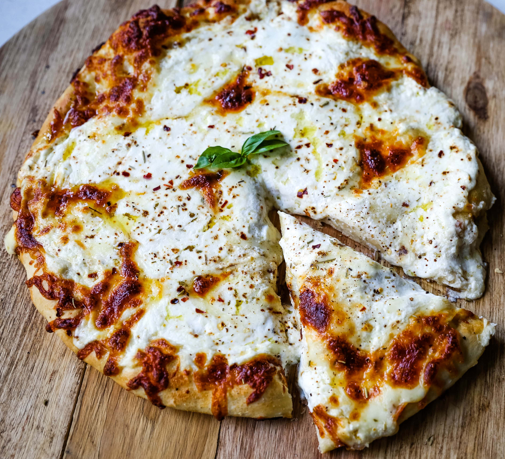

Pizza

Description
A New-York Style white pizza with drizzled olive oil, mozzarella, parmesan, and ricotta cheese with Italian herbs.
Ingredients
- 1 lb. Ready-to-Bake Refrigerated Pizza Dough
- 3 Tablespoons Olive Oil
- Garlic Powder
- Mozzarella Cheese
- Ricotta Cheese
- Parmesan Cheese
Steps
- Start with ready-to-bake refrigerated pizza dough.
- Top with freshly grated mozzarella.
- In a small bowl, stir together ricotta cheese, Parmesan Cheese and salt.
- Generously sprinkle with Italian herbs.
- Bake at high heat -- 450 degrees to allow the crust to crisp on the bottom.